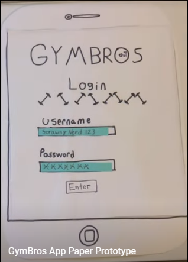

Problem Statement: Gym Wait

College students are struggling to balance work and personal fitness in their schedules. Gyms on campus have long waiting times and packed to the brim. This is a common problem on campuses across the country, and it really becomes a drain on kids after a while. The “Freshman 15” is a thing mainly because new students are trying to cope with the new work life and are intimidated by the sheer amount of other students.
Affinity Diagram: Gym Wait

My group and I worked together to brainstorm functions, accessibilty, and etc. for the app.
Persona: Stephen Owens

A persona of a typical gym wait app user.
StoryBoard

This story is about Stephen Owens finding and using the GymBros app.
AppSketch

This is a paper concept of what different screens of the app should look like.
Paper Prototype
A paper walkthrough of potential screens in the app.